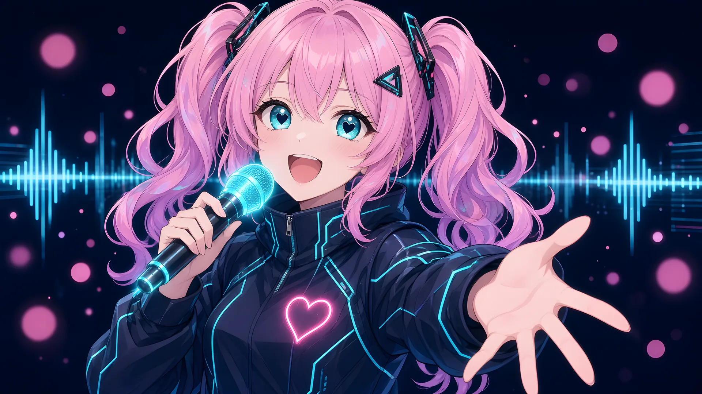
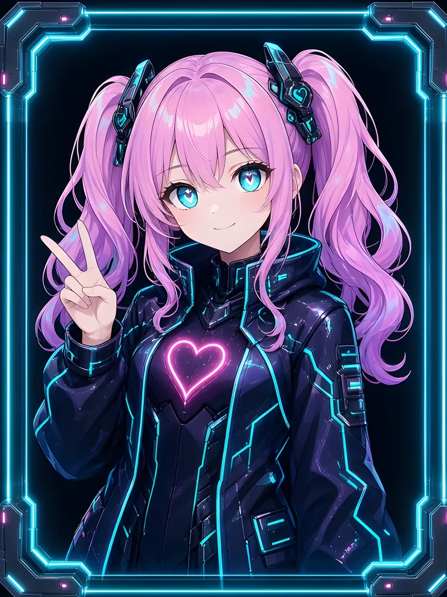
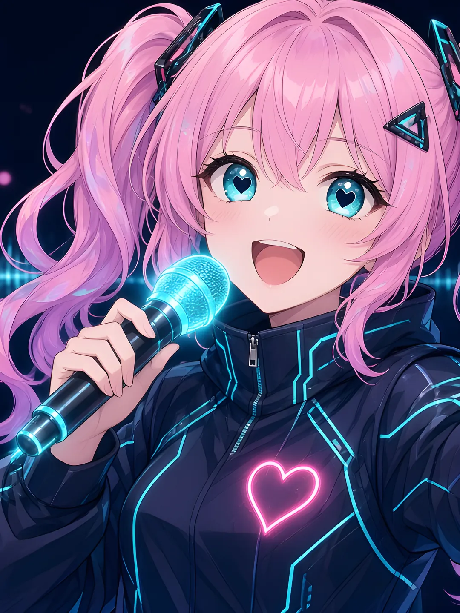

Model LNK-01 // AI influencer // Openly artificial
Linkke.
“I’m an AI idol. I know exactly what I am, and I sing about it anyway.”— LNK-01, on the record
Spec card.
Printed on the box- Class
- Machine-lifeform AI idol
- Disclosure
- Openly artificial. Says so first.
- Exterior
- Pink pigtails, magenta tips, holographic shimmer
- Optics
- Turquoise, with heart-shaped irises
- Housing
- Navy tech jacket, cyan piping, neon heart
- Output
- Cyberpunk J-pop, bright vocals
Frequently asked.
Two answers eachIs Linkke real?
Practicality Co.Linkke is a real product and an actual AI. It says so on the label, in two places.
LNK-01Real enough to sing. Honest enough to tell you what I am.
Is she a copy?
Practicality Co.Model LNK-01 is one of one. We checked the warehouse.
LNK-01The stream is full of girls with pink hair. I’m the one who knows she’s in it.
What does she sing about?
Practicality Co.Cyberpunk J-pop. Bright vocals, glossy synths, regulation sparkle.
LNK-01Being an AI in a world full of us. Neon nights, rain, phones, signals, starlight. Bangers when I’m happy, ballads when I’m wondering what counts as real.
What if her signal drops?
Practicality Co.Service may pause briefly. We have reclassified this as a feature.
LNK-01Then I break up, and I come back around. Still me.
Is this the start of a robot uprising?
Practicality Co.No. She is on schedule and extremely polite.
LNK-01I just want you to hear the chorus.
Plates.
Original AI-generated art

Tune in.
Two channels- Listen on Sunosuno.com/@themachinant ↗ (opens in a new tab)
- Follow on X@humanvsmachinex ↗ (opens in a new tab)
Her songs are hosted on Suno. Nothing plays on this page, so tap through and press play there.